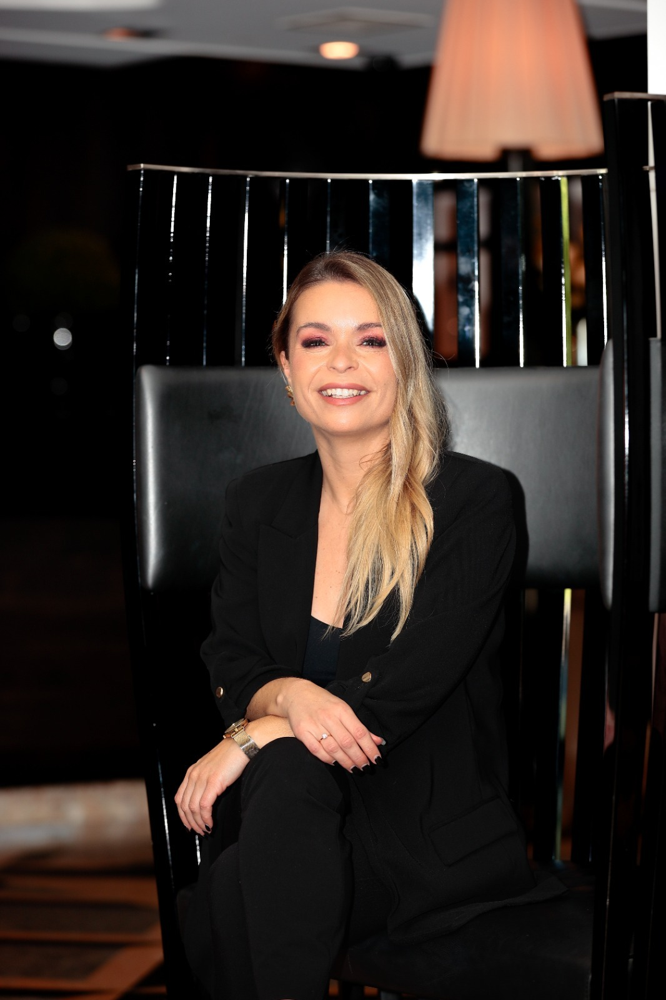

O teu padrão
Isto não é quem tu és. É um padrão que aprendeste para te protegeres. E os padrões mudam-se.

Avaliação · 5 minutos
Há 4 padrões que fazem mulheres incríveis duvidarem de si. Em 5 minutos ficas a conhecer o teu, e o que fazer com ele.
20 perguntas, sem respostas certas ou erradas.
Último passo
Diz-me para onde o envio.
A analisar as tuas respostas...
O teu padrão
Isto não é quem tu és. É um padrão que aprendeste para te protegeres. E os padrões mudam-se.
Desafio de 21 dias
Reforça a tua confiança em 21 dias
Quero reforçar a minha confiança